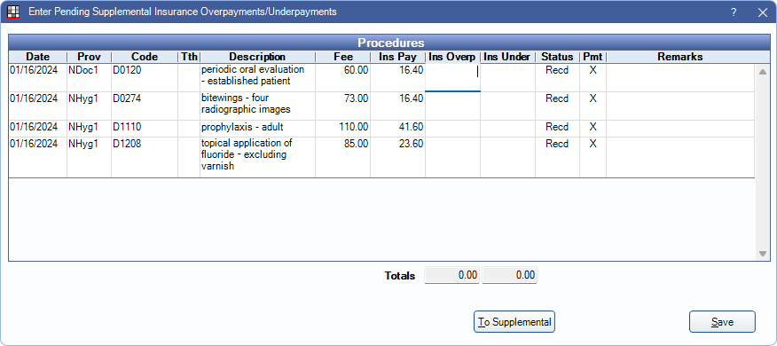

Enter Pending Supplemental Insurance Overpayments/Underpayments
Use Pending Payments to update balances to reflect anticipated supplemental insurance payments.
In the Edit Claim window, at the upper-right, is a Pending Payments section.

Click an option to enter pending insurance underpayments or overpayments. Amounts entered affect estimated account balances.
Ins Overpaid Click to enter a pending insurance overpayment. Opens the window shown below. Enter the amount overpaid in the Ins Overp column. Amounts are added to the claim as a negative PndSup line item.
Ins Underpaid Click to enter a pending insurance underpayment. Opens the window shown below. Enter the amount underpaid in the Ins Under column. Amounts are added to the claim as a positive PndSup line item.
To Supplemental: Change all Pending Supplemental (PndSup) payments to Supplemental (Supp). Finalize Insurance Payment after using this option.
Pending Supplemental Payments in the Account
Once Pending Supplemental amounts are added to a claim, a line item is added to the patient account. The pending supplemental amount is reflected as pending insurance in the account balance.

If a supplemental payment is no longer expected (e.g., entered by mistake or insurance is no longer going to make an additional payment), double-click a PndSup line on the claim and clear the applicable Ins Overp or Ins Under amounts or set to 0.